Operating System
Disk management
Ahmad Yoosofan
Spring 2024
Disk
Disk structure
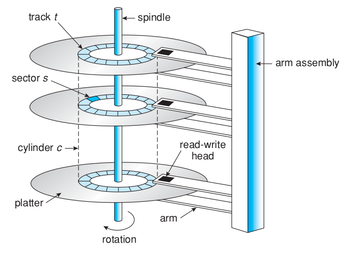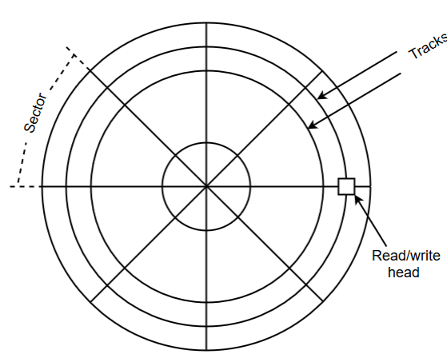
Storrage Areaa Network(SAN)
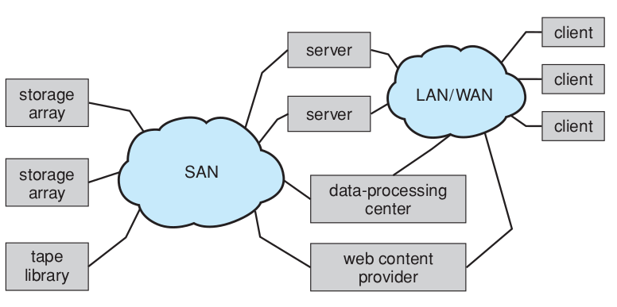File Management System
File Access Methods
- Sequential Access
- Random Access
Simple Access Disk
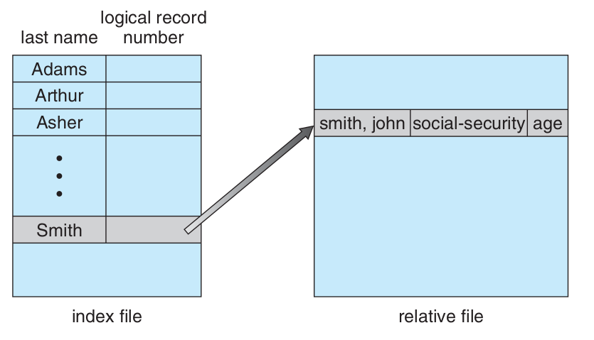Simple Disk Organization
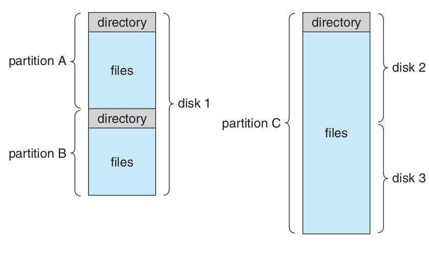One Level Structure of Folders
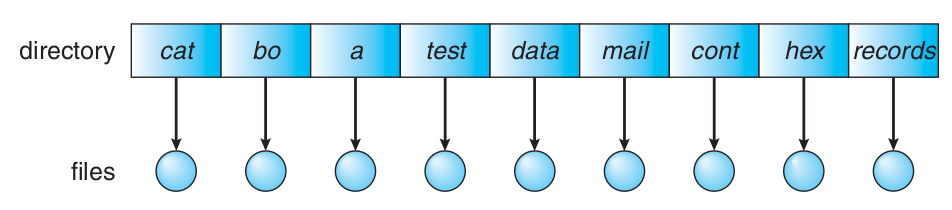Two Level Structure of Folders

Acyclic Graph based Folder Structure
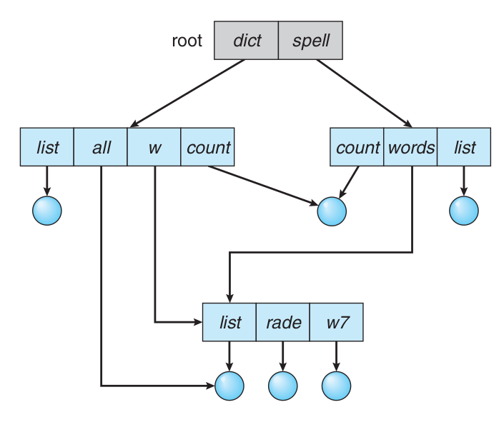General Graph based Folder Structure

Multi Level File Structure
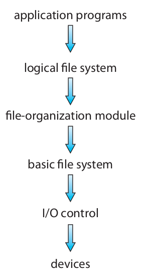Simple Control Block of a File

File struture in Main Memory
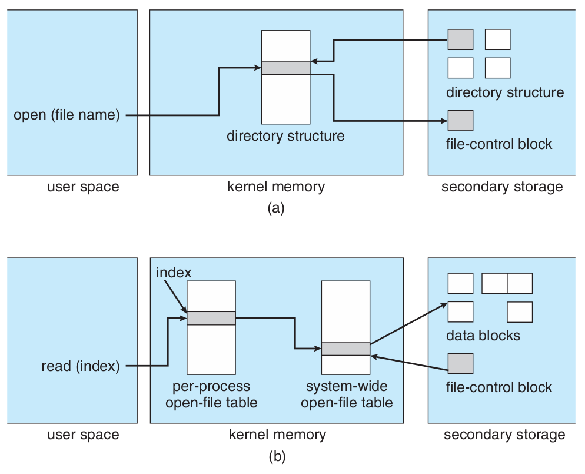- open file
- close file
Schematic View of Virtual File System
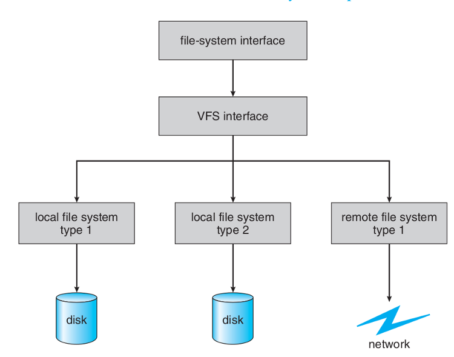Allocation Files Methods
.
Contiguous Block Allocation

- External Fragmentation
- Adding Block to File
- Speed
List Block Allocation

FAT Structure
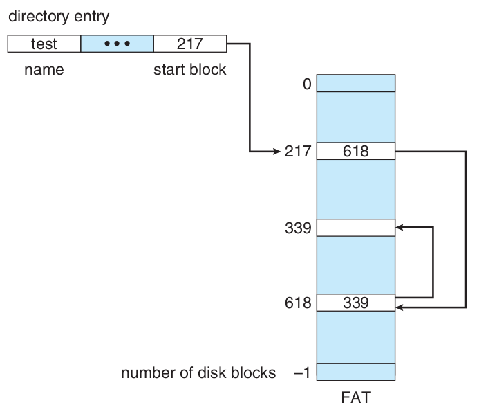Index Based Block Allocation

Contiguous Index Based Block Allocation
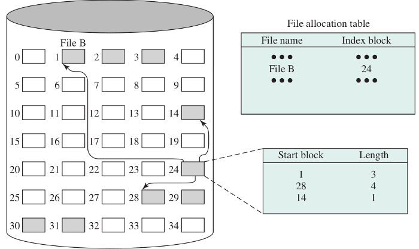Contiguous List Allocation

File Structure in Unix
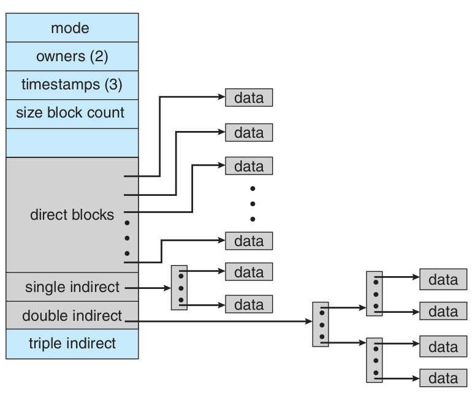RAM in DISK
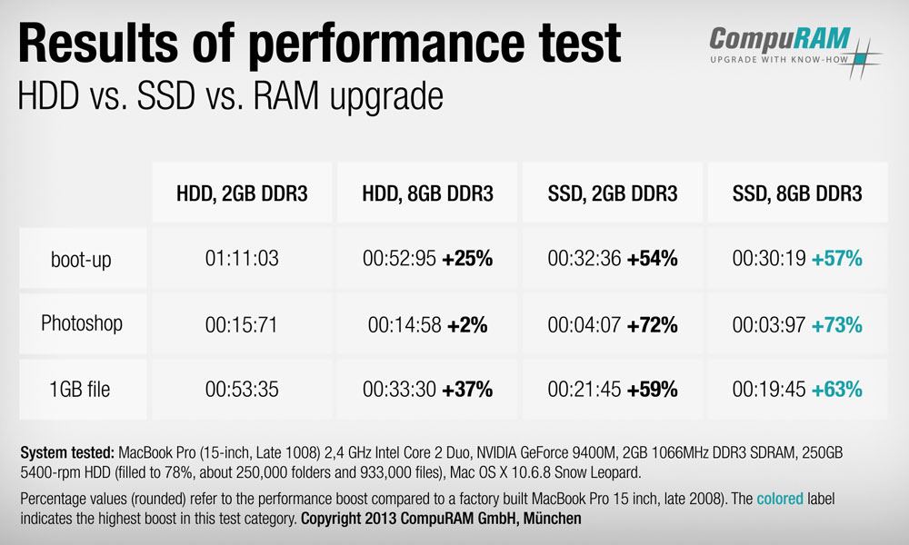File Allocation Methods Comparison
Method | Contiguous | Chained | Indexed | |
|---|---|---|---|---|
Preallocation? | Necessary | Possible | Possible | |
Fixed or Variable Size Portions? | Variable | Fixed blocks | Fixed blocks | Variable |
Portion Size | Large | Small | Small | Medium |
Allocation Frequency | Once | Low To High | High | Low |
Time to Allocate | Medium | Long | Short | Medium |
File Allocation Table Size | One Entry | One Entry | Large | Meduim |
Free Space Management
- How do we keep track free blocks on a disk?
- A free-list is maintained. When a new block is requested, we search this list to find one.
- The following are commonly used techniques:
- Bit Vector
- Linked List
- Linked List + Grouping
- Linked List+Address+Count
Bit Vector
- Each block is represented by a bit in a table.
- If a block is free, its corresponding bit is 1.
- When a block is needed, the table is searched.
- If the disk capacity is small, the whole bit vector can be stored in memory.
- For a large disk, this bit vector will consume too much memory.
- We could group a few blocks into a clusterand allocate "clusters".
- Another possibility is the use of a " summary table ".
Input Output Structure
Computer Bus

Hardware Ports

Status of Disk Requests


Disk I/O OS Terminology
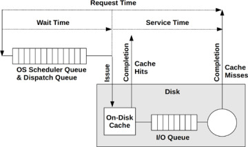
Operations performed during random access
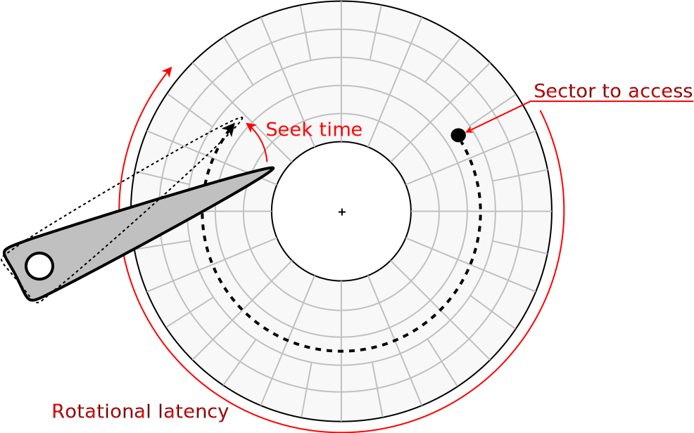Important Disk Parameters

- Seek Time
- Rotational Latency
- Transfer Time
- Disk Access Time
- Disk Response Time
Imporatnce of Track or Cylinder
زمان پیگیرد یا زمان جستجو
Seek time
- درخواستهای فرآیندها به بخشهای مختلف دیسک اشاره میکند که مهمترین پارامتر رفتن به سیلندر مورد نظر است.
- پس سیستم عامل در پایینترین سطح کار خود با دیسک دنبالهای از درخواستهای به سیلندرهای گوناگون را زمانبندی میکند.
98, 183, 37, 122, 14, 124, 65, 67
FCFS

SSTF
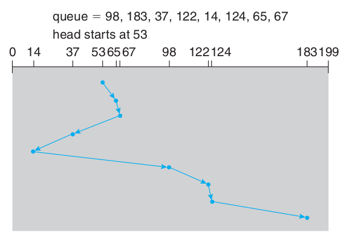SCAN
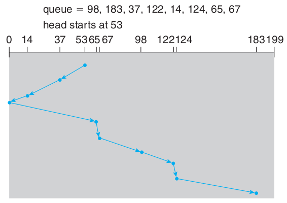C-SCAN
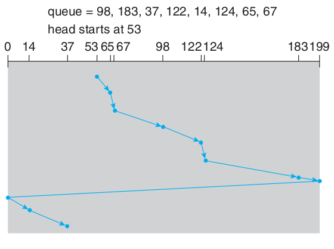LOOK
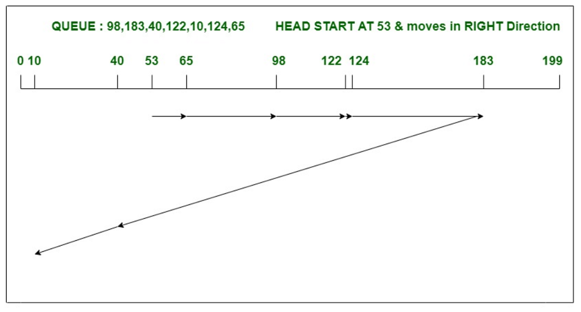C-LOOK
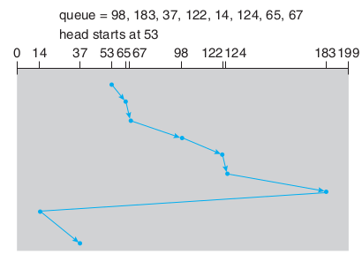F-SCAN
.
N-Step Scan
.
چند الگوریتم زمانبندی دیسک

نمونهای از مقایسهٔ چند الگوریتم
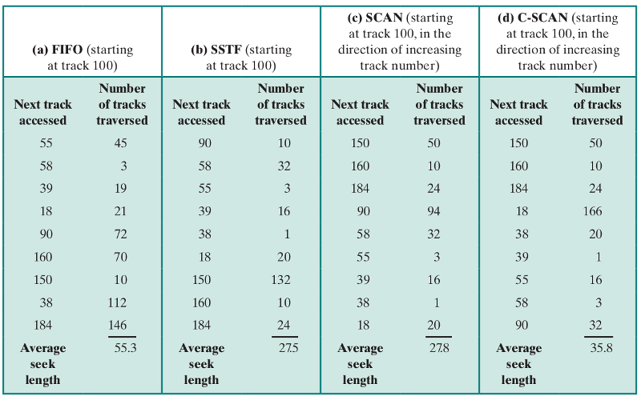انجام ورودی/خروجیها

RAID